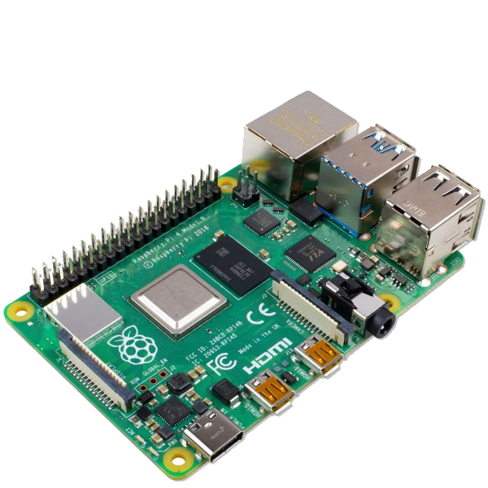
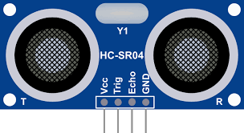
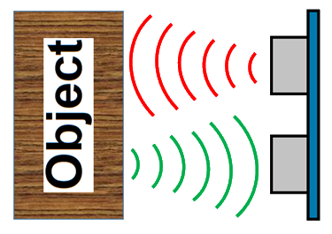
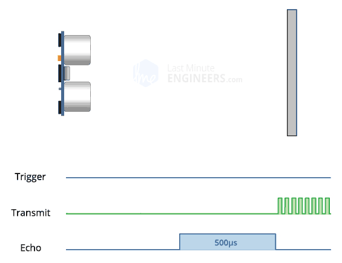
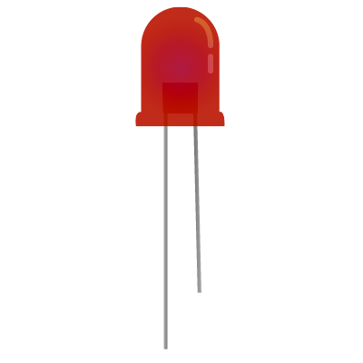
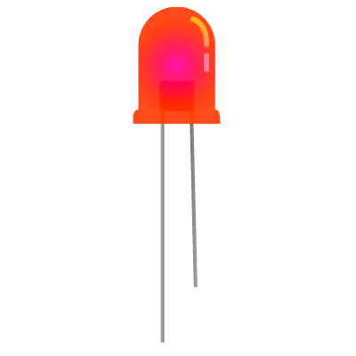
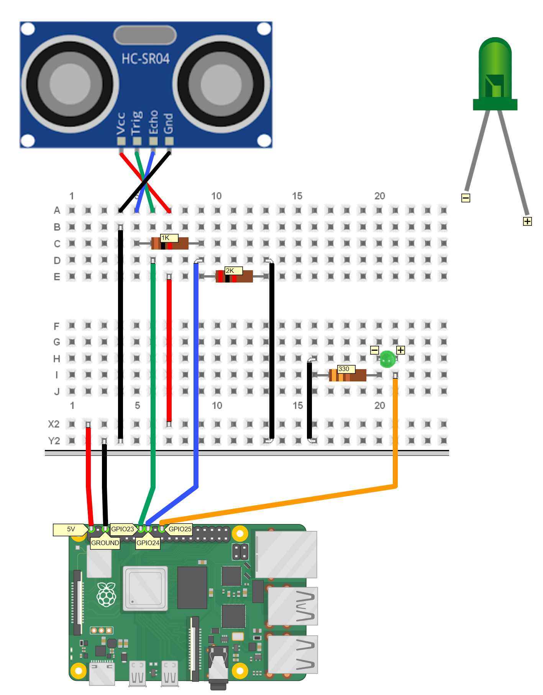

Requirement Analysis
The purpose of the final product is to manage a waste-disposal service.General Overview
System Abstract
The Sprint2 analyzes the components related directly or indirectly to the raspberry. Therefore we are interested in the following computational nodes:- Raspberry Pi
- WasteService
- DDR robot
Related Computational Nodes
Requirements Formalization
Entities
| Entity | Activity | Type | Description/Behaviour |
|---|---|---|---|
| alarmDevice (sonar) | Proactive | - | Entity, which is part of a smart device, that sends a message to the wasteService when it detects the presence of an obstacle. We formalize the alarmDevice as an actor because it has its own autonomous flow of control, and sends messages to wasteService. |
| warningDevice (led) | Reactive | - | Entity, which is part of a smart device, used to monitor the state of the trolley, We model it as an actor beacuse it processes messages one by one and updates the Led state accordingly. |
| wasteService | Proactive & Reactive | Actor | Handles the store requests and manages the transport trolley with high-level abstraction actions. It contains an internal representation of the waste service area. |
| transportTrolley | Proactive & Reactive | Actor | Handles the wasteService requests and sends lower-level commands to the basicRobot. |
| Reactive | Actor | Entity that receives commands from the transportTrolley and drives the DDR robot. |
Data
| Data | Type | Description |
|---|---|---|
| LedState | Enumerative |
All the possible states of the Led.
enum class LedState { OFF, ON, BLINKING }
|
Messages
| Message | Type | Sender | Receiver | Description |
|---|---|---|---|---|
| distance | Dispatch | Alarm Device | WasteService | Tell the distance of eventually detected obstacles. |
| stop | Dispatch | WasteService | Transport Trolley | Stop the robot and prevent it from doing any activity. |
| resume | Dispatch | WasteService | Transport Trolley | Resume the robot activity. |
| updateLed | Dispatch | Transport Trolley | Warning Device | Update the Led state. |
Raspberry Pi


We're going to use a Raspberry Pi 4 Model B, since we already have one. Moreover, It's going to constitute a separate node from the WasteService one, and will have two main components attached: a Led and a Sonar.
Sonar
The 
The sonar has 4 pins:
Vcc , supplies power to the HC-SR04 ultrasonic sensor (it operates at 5V DC);Trig (Trigger) , used to trigger ultrasonic sound pulses. By setting this pin to HIGH for 10µs, the sensor initiates an ultrasonic burst;Echo , goes high when the ultrasonic burst is transmitted and remains high until the sensor receives an echo, after which it goes low.GND , the ground pin.

Led
The 
However, by turning it ON and OFF in a rapid sequence, we can make it BLINK, and obtain a sort of "third state". Therefore, for the purpose of the project, we will have to update its state in real-time, according to the sonar data. Those data refers to the Transport Trolley current state:
- Transport Trolley is at HOME, then the Led must be off;
- Transport Trolley is moving, then the Led must be blinking;
- Transport Trolley is stopped, then the Led must be on.
Others
The minimal configuration is the following:
Since we don't expect to solder components directly to the board, we are going to need the following:
- a breadboard, which will will ease the creation and testing of different circuits;
- wires, needed to attach components to the Raspberry Pi.
- resistors (not esplicitly needed for the Raspberry Pi, but may be safer) to limit the amount of current flowing through the circuit.